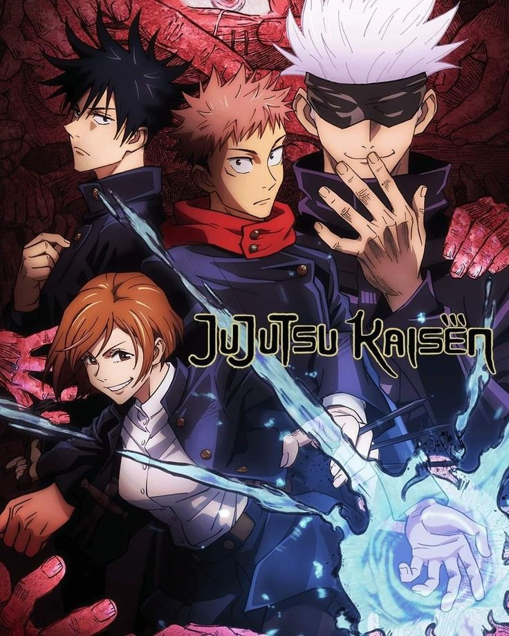
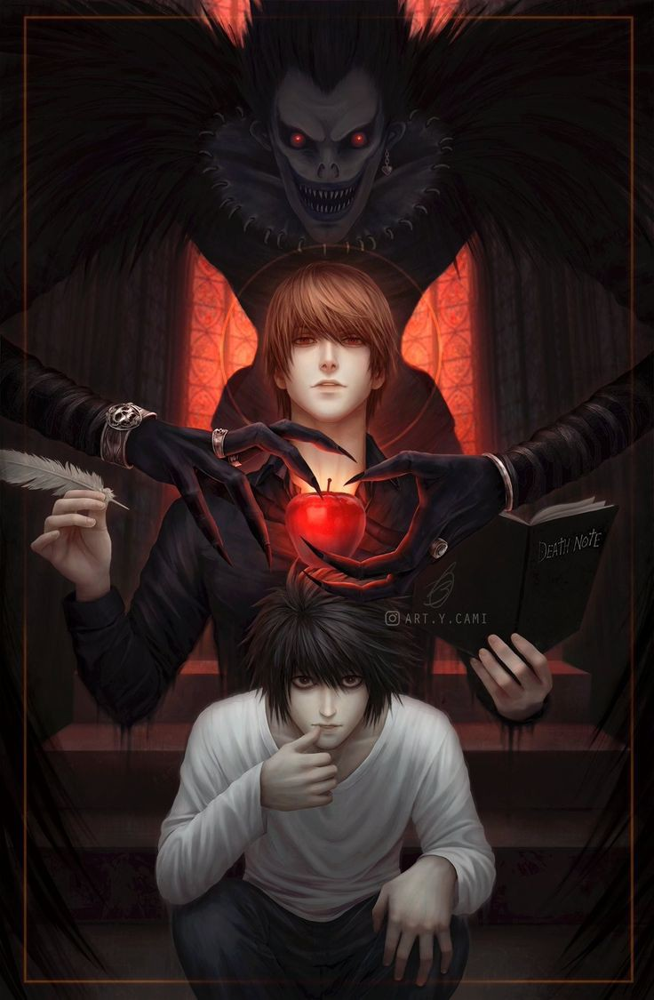
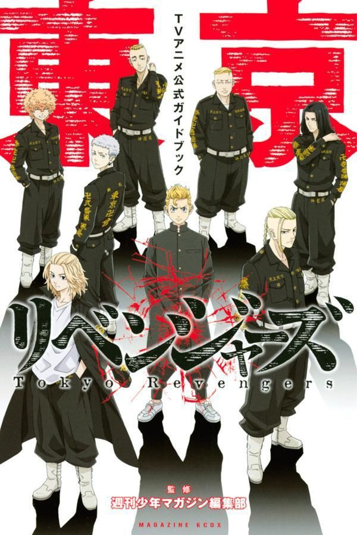

Demon Slayer is story about a boy named as Tanjro Komado, whose family is devoured by a demon. Only his younger sister, Nezuko survies but she is no longer a human. She had transformed into a demon too. But Nezuko is special she is a demon which will never devour humans. And from that day on Tanjiro decides to be a Demon slayer and find a way to transform Nezuko back into a human.
Trailer for Demon Slayer: The Mugen Train
2. JUJUTSU KAISEN

Yuji Itadori, a kind-hearted teenager, joins his school's Occult Club for fun, but discovers that its members are actual sorcerers who can manipulate the energy between beings for their own use. He hears about a cursed talisman - the finger of Sukuna, a demon - and its being targeted by other cursed beings. Yuji eats the finger to protect his friends, and ends up becoming Sukuna's host. However, Yuji discovers that he has inherited magic and is able to control this power without interference from Sukuna. He joins the Tokyo Metropolitan Magic Technical College to consumes all of Sukuna's fingers, which will enable a full exorcism to take place that will free him.
Do watch the trailer for Jujutsu Kaisen 0 movie that comes out on 24/12/21
3. DEATH NOTE

The story follows Light Yagami, a teen genius who discovers a mysterious notebook: the "Death Note", which belonged to the Shinigami (God of Death) Ryuk, and grants the user the supernatural ability to kill anyone whose name is written in its pages. The series centers around Light's subsequent attempts to use the Death Note to carry out a worldwide massacre of individuals whom he deems immoral and to create a crime-free society, using the alias of a god-like vigilante named "Kira", and the subsequent efforts of an elite Japanese police task force, led by enigmatic detective L, to apprehend him.
Watch the unofficial trailer for Death Note, which will give you an idea of yhe storyline.
4. TOKYO REVENGERS.

Takemichi Hanagaki, a 26-year-old freeter, learns one day that his middle school ex-girlfriend, Hinata Tachibana, as well as her younger brother Naoto, have been killed by the Tokyo Manji Gang. When Takemichi is pushed in front of a train, he teleports exactly 12 years into the past to 2005. While reliving his middle school years, Takemichi meets with Naoto and divulges the exact date he and Hinata will die. When they shake hands, Takemichi is suddenly transported back to the present, creating a time paradox where Naoto survives and is now a detective. Naoto deduces that every time they hold hands, Takemichi is transported 12 years into the past. Using his knowledge from the future, Takemichi vows to save Hinata.
Trailer for Tokyo Revengers
I know the introductions have got you excited. Now a question that must have arised in your mind is that where to watch these anime for free without any ad breaks. Don't worry I got your back.
You can watch free anime without any ad breaks on the following links. You can also adjust the picture quality according to your network. All the anime are available with English subtitles as well as dubbed. So go ahead and enjoy.